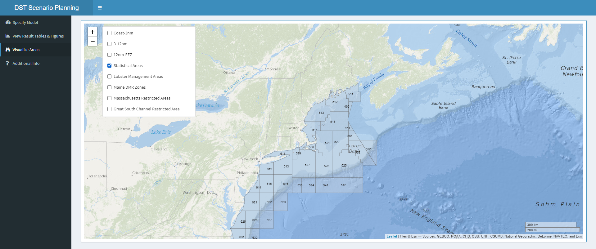
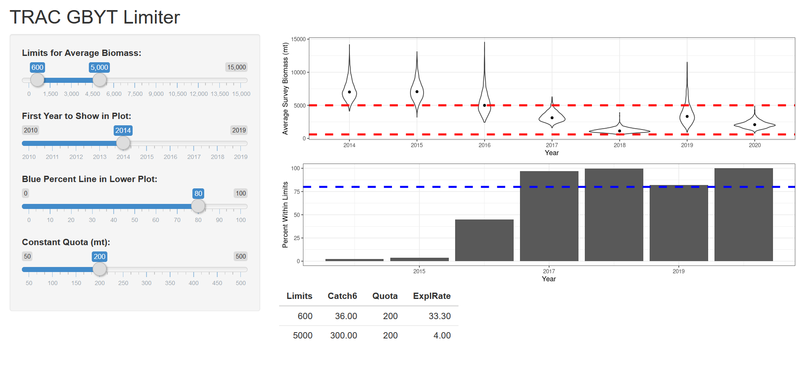

2 Shiny Apps
2.1 Authentication
App name: authenticate
Developer(s): Andy Beet
Point of contact: Andy Beet, andrew.beet@noaa.gov, (EDAB)
Keywords: credentials, authentication, password, database
Key Packages: DBI/odbc
GitHub: https://github.com/NOAA-EDAB/authenticate
2.1.1 Application Purpose
A simple front end to authenticate a user. Authentication is based on database access credentials. If another app requires access to an internal database this front end can be included in the app to add a layer of authentication.

2.1.2 Uses
Not presently incorporated into any other app. However several other apps currently in development may benefit from its use.
2.2 Northeast Right Whale Shiny Apps
Apps Name: Northeast Right Whale Shiny Apps
Developer(s): Leah Crowe
Point of contact: Leah Crowe, leah.crowe@noaa.gov (Protected Species Branch)
Keywords: Survey data, sightings, trigger analysis, pdf, report
Key Packages: leaflet, leaflet.esri, igraph, rgdal, rhandsontable, rmarkdown, rodbc, tinytex, webshot
GitHub: leahcrowe/narwss_rwsas_apps
2.2.1 Application Purpose
2.2.1.1 Aerial Survey Processing App
This app aids the user in processing aerial survey data and generating a report pdf that is then emailed to stakeholders. Any right whale sightings are then intergrated into the Right Whale Sightings Advisory System and the “Trigger Analysis” app (below) is used to evaluate for potential dynamic protection zones.
2.2.1.2 Trigger Analysis
This app is used to evaluate if visual sightings or acoustic detections trigger dynamic management areas (aka right whale SLOW zones), and then it calculates the boundaries. A report and letter are generated here that detail the area where vessels should reduce their speeds, and these products are then emailed to GARFO to initiate the request. A kml is also generated which is used to display the zone on the Right Whale Sightings Advisory System interactive map.
2.2.1.3 Photo Position Finder
This app will finalize the photo submission spreadsheet NEFSC submits to the North Atlantic Right whale Consortium by gathering latitude and longitude from the .gps files for the date and time specified. From this position, “Area” will be determined and other details are auto-filled.
2.2.2 How often is it used?
The Aerial Survey Processing App is used after every right whale aerial survey – for example, in 2019, NEFSC surveyed for right whales on 92 different days, so this is a frequently used tool.
The Trigger Analysis App is used each time a right whale sighting is reported to the Right Whale Sighting Advisory System to evaluate for a dynamic protection zone. In 2019, Dynamic Management Areas were initiated or extended 29 times, but the app was used more than this to evaluate sightings that also did not trigger these zones.
The Photo Position Finder App is generally used 2–3 times a year when we organize our photo data for submission.
2.2.3 Has it been used in management?
This app is used to inform and request management decisions and is an integral part of the Right Whale SLOW zone program.
2.3 Biological Sample Monitoring Database Query Tool
Apps Name: Biological Sample Monitoring Database Query Tool
Developer(s): Alicia Miller
Point of contact: Alicia Miller, alicia.miller@noaa.gov (Population Dynamics Branch/Protected Species Branch)
Keywords: commercial fisheries data, stock assessment, biological sampling
Key Packages: odbc, rgdal, DBI, DT, tidyr, dplyr, ggplot2, plotly
GitHub: ALoMiller/BiosamplingQuery
2.3.1 Application Purpose
The Biological Sample Monitoring Database System (BSMDBS) was developed for the Northeast Fisheries Regional Office and the Northeast Fisheries Science Center to record and monitor biological samples of commercially important marine species in the Northwest Atlantic collected by Port Agents. Samples include the collection of animal lengths and age structures (otoliths, scales, spines, etc.) which are strategically requested to attain a representative spatial and temporal sample of the associated stocks. All sampling is performed after the vessel lands their catch. With the implementation of electronically collected data, a modern version of the dataset (BSM) was created as an extension of the sampling effort. Sampling data are most commonly used to inform the stock assessment process, develop length/age models, and to characterize commercial fisheries. This app allows the user to query all existing commercial fisheries biological sampling data, provides summaries of the sampling efforts in interactive figures and tables, and provides a sample size comparison for optimizing sampling efforts and determining future sampling requests.
2.3.1.1 User Specifications
The user populates the widgets in the interface on the left side of the page (species, range of fiscal years, and stat areas) and then clicks the RUN button to begin the query. A status bar showing progress then appears in the bottom right corner of the page until the process is complete and the app then changes from the Read Me tab to the Collected Samples tab where results are shown.

2.3.1.2 App Results
Once the query has finished executing, the results are divided into tabs across the top. The Collected Samples tab shows a table of sample collection results that can be sorted, searched, and downloaded followed by some interactive bar plots showing details of the demographics of length and age samples collected each year.

The Requested Samples tab provides a similar table detailing the requested samples for a given year, statistical fishing area, market category, fishing gear configuration, and fiscal quarter. The third tab, Comparison Plot combines the collected and requested sample totals into a figure that shows how well the port samplers were able to carry out the request for a given year. This information can be useful in planning for changes in the upcoming year or tracking where sampling efforts have continuously fallen short.

The final tab, Length Sampling, addresses the number of length samples collected and helps the analyst determine an appropriate number of lengths to be collected to achieve a sound length frequency. The cost of sampling is now paid per length measured, so sample requests need to be carefully thought out. This tab gives a mean length, sample size, and standard error for each sampling event and then compares those statistics to a subsample of 50% less lengths in each sample.
2.3.2 How often is it used?
The Biological Sample Monitoring Database Query Tool is generally used by stock assessment analysts prior to the beginning of a new fiscal year to determine the allocation of their biological sampling requests for the upcoming year. It is also used throughout the year to evaluate the appropriateness of requested samples relative to ongoing fishing operations. The query tool may also be used in the stock assessment process for determining effective sample size information which is required in some analyses. With the addition of age samples being reported, it is possible the Age and Growth scientists may use this app throughout the year to monitor sampling intensity.
2.3.3 Has it been used in management?
Fisheries management may affect the biosampling request process and having a better understanding of the management of a specific fishery will be beneficial in the use of this app. This tool needs to be used with the knowledge of where landings come into port and what statistical areas they were caught. In addition, the analyst should have some idea about any changes in the fishery (quotas, seasonal closures etc.). For example, if the Rhode Island black sea bass fishery doesn’t open until September, requesting 2nd fiscal quarter samples would be a waste of resources. Understanding the life history of a species (such as incoming recruitment events) is important as well when determining allocation of sample requests by market category.
2.4 Observer Data Spatial Portal
Apps Name: Observer Data Spatial Portal
Developer(s): Alicia Miller
Point of contact: Alicia Miller, alicia.miller@noaa.gov (Population Dynamics Branch/Protected Species Branch)
Keywords: commercial fisheries data, stock assessment, fisheries observer data
Key Packages: rodbc, rgdal, pbsmapping, sp
2.4.1 Application Purpose
The Northeast Fisheries Observer Program collects data from commercial fishing vessels and processors both on-board the vessel and dockside. Observers collect information on catch and bycatch composition, protected species interactions, and gear configurations. Observer data directly inform stock assessments which monitor the exploitation rate of fisheries. Stock assessments use observer data to estimate discards/bycatch and ,if dockside monitoring is limited, the size and age composition of landings. In addition to monitoring discard amounts, observer data can provide a more detailed look at fishing behavior. This app was developed to explore the spatial and temporal aspects of existing observer data and provide an efficient tool for stock assessment. It gives analysts and reviewers the opportunity to efficiently query and visualize observer data throughout the assessment process. The user can subset the data by catch type, species, gear type, and by month(s) and year(s). The option to overlay fall and/or spring NEFSC Bottom Trawl Survey catches is also available. Users can adjust the catch size bins in the legend and download all data into a csv file or save the currently displayed map as an image.
2.4.1.1 User Specifications
The user populates the widgets in the interface on the left side of the page (catch type, species, gear type, range of years and months, catch bin sizes, and option to overlay spring or fall survey data) and then clicks the RUN button to begin the query. A status bar showing progress then appears in the bottom right corner of the page until the process is complete and the map in the main panel refreshes.
2.4.1.2 App Results
Once the query has finished executing, a map displaying catches in ten minute spatial squares appears in the Map tab. This map can be saved as a png file by clicking the Download Map button on the left panel below the RUN button.
A second tab, Table shows the raw observed catch data used in the map summary. It is important to note that this data does not meet the confidentiality requirements and should not be displayed in a public setting, but is more for the analyst use. This data table can be downloaded using the Download Data button on the left panel below the RUN button. The user has the option to also view and download data where position information is not available and therefore not displayed in the map.
A brief summary of the data is also displayed at the bottom of the left panel including the total number of observed catch records and a histogram of the number of records per year.
2.4.2 How often is it used?
The Observer Data Spatial Portal is generally used anytime a stock assessment analyst is looking for information about spatial and temporal trends in commercial fishing. It may also be used during stock assessment review meetings to help answer questions or by the working group throughout the stock assessment process to help understand where observer coverage exists and the spatial extent of a fishing fleet throughout the year.
2.5 SAGA
Apps Name: SAGA
Developer(s): Alicia Miller, Dan Hennen
Point of contact: Alicia Miller, alicia.miller@noaa.gov (Population Dynamics Branch/Protected Species Branch)
Keywords: fisheries independent data, stock assessment, index of abundance
Key Packages: rodbc, rgdal, leaflet, htmlwidgets
GitHub: ALoMiller/SAGA
2.5.1 Application Purpose
Stock assessments analyze and report fish population dynamics including information on changes in abundance of fishery stocks in response to fishing and the environment. Population models utilize fishery-independent data to estimate a time series of population abundance, size and age composition, and fishing mortality. The NEFSC Bottom Trawl Surveys are the longest running, continuous time-series of bottom fish and marine invertebrate sampling in the world and one of the main sources of fishery-independent data used in stock assessments in the Northeastern United States. The original survey analysis software was a Fortran program known as SURVAN. It evolved into SAGA (Survey Area Graphical Analysis) which was developed as an interactive tool for assessment scientists to pull survey data from the Oracle database with various user specifications (species, years, seasons, strata, gear and vessel calibrations, etc.). With recent updates this application has depreciated and is no longer supported. Consequently, this new Shiny SAGA application was developed. Static results of the survey has also been developed in an Oracle framework within a stock assessment system known as StockEff.
2.5.1.1 User Specifications
Under the Survey Indices section, the user populates the widgets in the interface (Oracle username and password, strata, species, season, range of years, range of lengths/ages, tow evaluation specifics, and calibration settings) and then clicks the RUN button to begin the query/analysis. A status bar showing progress then appears in the bottom right corner of the page until the process is complete and a plot of the indices over time is displayed. A Help tab can be found in the dashboard that provides guidance on the various user specifications.

2.5.1.2 App Results
Survey indices and raw catch data are available for download using the Download .csv Data or Download RData buttons. A Maps tab shows an interactive Leaflet map of the survey catch data based on the user specifications going into the index calculation. This map can be saved as an html file by clicking the Download Map button.
2.5.2 How often is it used?
This app is useful anytime an assessment scientist or manager is interested in evaluating different spatial and/or temporal specifications for stocks, different length and age calculations, gear and vessel calibrations, or tow success criteria. It also provides data that can be used to explore spatial and temporal trends in survey catches. As an app that allows examination of alternative survey analyses in real time, it may also be useful during stock assessment review meetings to help answer questions.
2.6 North Atlantic Right Whale Decision Support Tool App
Apps Name: North Atlantic Right Whale Decision Support Tool App
Developer(s): Alicia Miller, Sean Hardison, Andy Beet, Scott Large, Burton Shank
Point of contact: Alicia Miller, alicia.miller@noaa.gov (Population Dynamics Branch/Protected Species Branch)
Keywords: fisheries management, risk analysis, protected species
Key Packages: rgdal, leaflet, rhandsontable, rmarkdown
GitHub: ALoMiller/DecisionSupportToolApp
2.6.1 Application Purpose
The North Atlantic Right Whale Decision Support Tool App was built to assist managers, decision makers, and stakeholders with visualizing and understanding spatiotemporal overlap between fixed fishing gear (traps, pots, gillnets, and aquaculture) and large whales distributions in the US, particulatly the North Atlantic Right Whale (NARW). The model calculates how risk of entanglement to NARW may change as a result of changes to the spatial distribution and configuration of fishing gear. Within the model, risk posed to a whale species is calculated as the product of: (1) the density of fishing gear at a given location, (2) the threat the gear poses to the whale population taking into account various gear configurations, dimensions, and entanglement reduction measures, and (3) the density of whales expected in the given location. The result is a relative risk “score” for given scenarios of when, where, and how fishing occurs. The Decision Support Tool (DST) was developed as a function to be run in the R statistical software. In order to make the tool more accessible to a broader audience, a Shiny app was created with the intention of it eventually being hosted on a public facing server. This would allow users to access the DST through a website and be able to run potential management scenarios with the more user-friendly form of a graphical user interface.
2.6.1.1 User Specifications
Under the Specify Model dashboard menu, users can choose to open or modify an existing scenario (this specifies gear restrictions, spatial extents/restrictions, and management actions) from the dropdown OR create a new scenario by adding actions to the interactive spreadsheet. Next, the type of fishery and whale species are specified using the dropdown widgets and a new name applied to your scenario run should be entered. Other model specifics can also be turned on or off and then a click of the Run Model button executes the model. Model status updates and warnings will print below the input spreadsheet until completion.
An RMarkdown file was created with detailed instructions and more information on how to use the app under the Additional Info tab. To visualize management areas when creating a scenario, users can click on the Visualize Areas tab in the dashboard menu to open an interactive Leaflet map.

2.6.1.2 App Results
Once the model finishes running, users can click on the View Result Tables & Figures tab to view results. If more than one scenario has been run during the session, a Choose Scenario dropdown widget makes it possible to switch between model results. Click on the various tabs below to view a pdf of the output Tables, Gear Redistribution Figures, Default Figures, Scenario Figures, and Threat Figures. The viewer allows users to zoom on figures, download, and print results.

2.6.2 How often is it used?
The DST was created in response to a request from the Atlantic Large Whale Take Reduction Team (TRT) for a decision-making tool to aid them in risk reduction under various fishing scenarios. The TRT is made up of scientists, members of fishing industry, state and federal managers, and conservationists, that utilize this tool regularly to understand the impacts of fishing gear and work together to mitigate risks of entanglement on large whales. This app allows all TRT members to run scenarios without the complexity of modeling software and skills.
2.6.3 Has it been used in management?
While designed to aid in rule-making, the DST is not dispositive for management decisions. It has been a tool used along with other analytical methods and published research leading to management decisions aimed at reaching a goal of 60 percent entanglement risk reduction.
2.7 R3
Apps Name: R3 (Recognizing Random Residuals)
Developer(s): Chris Legault
Point of contact: Chris Legault, chris.legault@noaa.gov (Population Dynamics Branch)
Keywords: game, residuals, bubble plot
Key Packages: dplyr, tidyr, ggplot2
GitHub: cmlegault/R3
2.7.1 Application Purpose
Think you can recognize when residuals are random versus biased? Here’s a game to let you see how good you really are. Start with the ‘Demo’ tab to see how the different biases look. Use the ‘Settings’ tab to create a situation like you are accustomed to seeing in your or someone else’s assessment. The ‘Random or Not?’ tab is the fun part. A plot is provided and you guess whether the residuals are random or biased with immediate feedback. The ‘Results so far’ tab lets you see how you are doing. Can you do better than random? If so, bump up the difficulty a notch and try again.
2.7.2 How often is it used?
When first developed, many members of the Population Dynamics Branch used the R3 app to test their ability to recognize random residuals in age composition plots. Many were surprised by often they were fooled, thinking random plots were not or vice versa. Results were used to modify the colors used in bubble plots in the ASAPplots R package used with the ASAP stock assessment program. A READ speed talk in December 2019 introduced the R3 app to a wider audience (the Resource Evaluation and Assessment Division), with a subsequent increase in usage. The R3 app is used occasionally as people wish to refresh their ability to recognize random residuals in bubble plots.
2.8 Scorer
Apps Name: scorer
Developer(s): Chris Legault
Point of contact: Chris Legault, chris.legault@noaa.gov (Population Dynamics Branch)
Keywords: simulation, IBMWG, scoring
Key Packages: tidyverse
GitHub: scorer_app
2.8.1 Application Purpose
The Index Based Methods Working Group (IBMWG) generated about 300 GB of simulation results comparing 14 approaches to providing catch advice across a range of situations. There were 50 performance metrics computed from each of 1,000 simulations across the methods and scenarios. Exploration of this large amount of information was facilitated by the use of the scorer app to compute the rank or residual score for any combination of metrics from the base, no retrospective, or statistical catch at age sets of analyses. This app was recommended for use by the peer review panel that met Dec 7-11, 2020.
2.8.2 How often is it used?
The scorer app was used extensively by the IBMWG to explore performance of the different index based methods across the range of scenarios. This work continues and it is expected that these results will continue to provide useful information ragarding situations that are or are not well suited for specific index based methods. Further develop of the app was recommended during the peer review to address the issue of “bigger is better” across all metrics.
2.8.3 Has it been used in management?
The app was recommended for use as a communication tool with managers. However, the limitations of the current shiny1 server to only users who can get behind the firewall makes this recommendation challenging. Currently, managers who wish to use this app must download the software from the GitHub site and run it locally. Creating a fully open shiny server would increase the utility and ease of use of this app by managers.
2.9 Limiter
Apps Name: limiter
Developer(s): Chris Legault
Point of contact: Chris Legault, chris.legault@noaa.gov (Population Dynamics Branch)
Keywords: survey, quota, TRAC (Transboundary Resources Assessment Committee)
Key Packages: dplyr, ggplot2, gridExtra (would prefer to use cowplot)
GitHub: limiter-app
2.9.1 Application Purpose
This app was presented at the 2020 meeting of the Transboundary Resources Assessment Committee (TRAC) as a means of setting a constant quota for Georges Bank yellowtail flounder, as long as the survey biomass remains within specified bounds. The app allows the user to change the bounds and the quota to see how likely recent years would be to fall outside the bounds. The TRAC recommended its use in the future to provide catch advice to the Transboundary Management Guidance Committee, the US-Canada joint management body for this stock.

2.9.2 How often is it used?
The app on the Shiny server has not been used due to the firewall limitations. The app has been demonstrated to the TMGC and the New England Fishery Management Council’s (MEFMC) Scientific and Statistical Committee (SSC). Both groups encouraged further developement of the app.
2.9.3 Has it been used in management?
Not yet, but the TMGC and SSC both encouraged continued developement of the app for use in management. However, the limitations of the current shiny1 server to only users who can get behind the firewall makes this recommendation challenging. Currently, managers who wish to use this app must download the software from the GitHub site and run it locally. Creating a fully open shiny server would increase the utility and ease of use of this app by managers.
2.10 State of the Ecosystem Time Series Analysis
Apps Name: State of the Ecosystem Time Series Analysis
Developer(s): Kimberly Bastille
Point of contact: Kimberly Bastille, kimberly.bastille@noaa.gov (EDAB)
Keywords: SOE, IEA, Trend Analysis, GAM
Key Packages: NOAA-EDAB/ecodata, DT, tidyr, dplyr, ggplot2, mgcv
GitHub: kimberly-bastille/soetrends
2.10.1 Application Purpose
The purpose of this shiny app is to explore Generlized Additive Models for ecosystem indicators used in the State of the Ecosystem reports. The State of the Ecosystem reports are compiled to present synthesized ecosystem information to fisheries managers in New England and the Mid-Altantic. The trends applied to timeseries over 30 years are linear and from request from the science and statistical committees we are exploring more complex trends using GAMs. This shiny app can be used to explore time series analysis for datasets where it appears linear may not be the most appropriate.
2.10.1.1 GAM Plots
Many datasets included in the State of the Ecosystem reports are loaded into this app. The figure shows that data points and the current SOE trend line in solid orange or purple depending on positive or negative trends. The GAM can be scaled with the knots and smoother function slider and are visualized by dashed line where areas with significant trends are colored either orange or purple depending on whether it is a positive or negative significant trend.
2.10.1.2 Downloadable data
Once the best trend line is chosen the predicted values are made available in the “Table” tab of the app. This table includes a predicted GAM fit and predicted standard error as well as the original dataset.
2.10.1.3 Documentation
The final tab of this app holds the documentation for this app including where to find more details on each dataset and the specific manipulability of the tool. This section also includes a link to some summary statistics for the Mid-Atlantic datasets.

2.10.2 How often is it used?
Currently this app is used within EDAB during the synthesis discussions. The goal, however, is to have Mid-Atlantic council use this tool to help inform their risk assessmet. This shiny app shows has tools for model selection and has the data downloadable for use in other products.
2.10.3 Has it been used in management?
Not yet but that is the goal.
2.11 Northeast Ecosystem and Socio-economic Profiles
App’s Name: NEespShiny
Developer(s): Abby Tyrell
Point of contact: Abby Tyrell, abigail.tyrell@noaa.gov (EDAB/contractor)
Keywords: ecosystem and socioeconomic profiles, IEA, EBFM/EBM
Key Packages: NEesp, bookdown, ggplot2, dplyr
GitHub: NOAA-EDAB/NEespShiny
2.11.1 Application Purpose
This shiny app is a graphical user interface for the NEesp package, which was developed to gather and display ecosystem and socioeconomic data for Northeast stocks. The NEEsp package assembles existing data, such as survey data, catch and landings, physical oceanography data, and trophic information, and integrates these data into reports using Rmarkdown templates. The Rmarkdown templates are rendered into reports with bookdown, so each report section can be saved as its own .Rmd file.
The NEespShiny app allows users to create reports without needing to directly work with the NEesp code.
There are five functionalities in the shiny app:
2.11.1.1 1. Render a single file from the package templates
The user can select any of the .Rmd files that are saved in the package indicator template, and the report page for the species selected will be displayed.
2.11.1.2 2. Render one or more files from local templates
The user can upload one or more .Rmd files and optional R scripts to test rendering of files in development. This functionality is primarily for developers.
2.11.1.3 3. Download an indicator report
The user can download a complete indicator report for any species. The report folder includes a Word report, raw data, and figures.
2.11.1.4 4. Download a regression report
The user can download a complete regression report for any species. The report folder includes a Word report, raw data, and figures.
2.11.1.5 5. Download an ESP report card
Using the data outputted from the regression report tab above, the user can create a report card for a stock.
The NEespShiny app is currently disseminated as an R package. The package can be downloaded from GitHub, and the app can be initiated with one line of code: NEespShiny::run_NEesp(). This allows users to access and use the app without connecting to a VPN to access the NEFSC shiny1 server. Hopefully the NEespShiny app can eventually be hosted on a public-facing server.
2.11.2 How often is it used?
This product is still in development. It is being created as part of the Northeast Ecosystem and Socioeconomic Profiles project (NE-ESP). and h
2.11.3 Has it been used in management?
Not yet, but hopefully this product will eventually be regularly incorporated into the stock management cycle in the Northeast as the NE-ESP project matures.